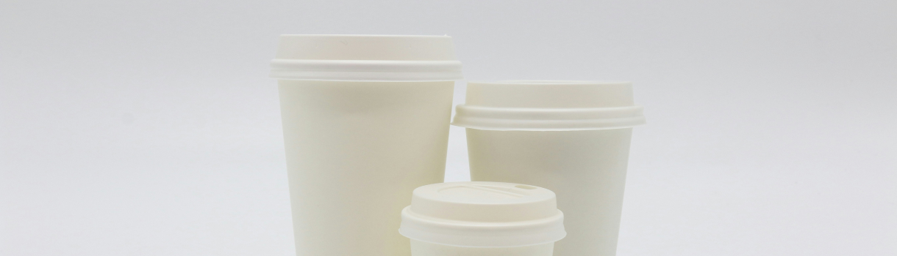
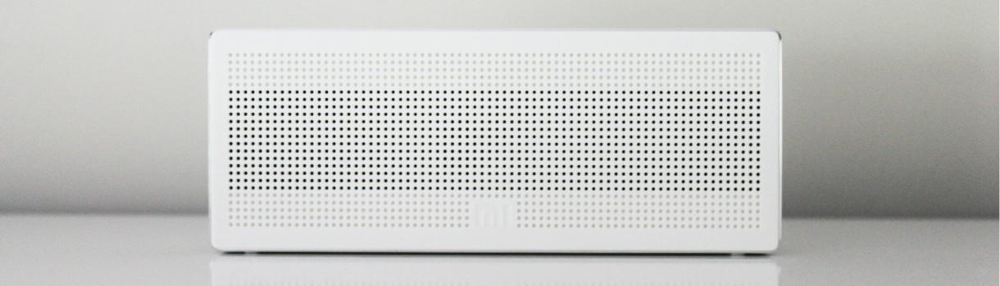
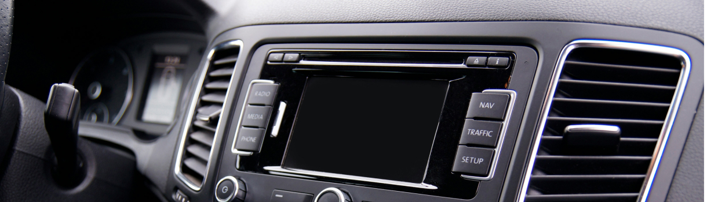

home > 사업소개 > 합성수지
합성수지
스티렌계 수지의 핵심 기술인 중합, 촉매, 공정 기술을 기반으로 ABS, HIPS, SAN 등
범용수지에 해당하는 다양한 분야의 신제품을 개발하였습니다
General Purpose Polystyrene
강도가 높고 성형 가공성이 우수하여 가전제품, 구조부품, 일상잡화에 사용되는 범용 수지입니다.
용도
-
종이컵
Paper Cup -
건축자재
Construction -
전자제품
Electronics
특징
- ① 투명성, 착색성, 전기적 특성, 내수성, 무독성, 성형가공성, 치수안정성 우수
- ② 용융점도가 낮고 가열분해가 잘 일어나지 않아서 성형가공(열성형과 발포성형) 용이
High Impact Polystyrene
PS와 고무를 접목시켜 충격강도 및 성형가공성이 우수 가전제품, 구조부품, 일상잡화에 사용되는 범용 수지입니다.
용도
-
식품용기
Food Container -
에어컨
Aircondition -
전자제품
Electronics
특징
- ① 투명성, 착색성, 전기적 특성, 내수성, 무독성, 성형가공성, 치수안정성 우수
- ② 용융점도가 낮고 가열분해가 잘 일어나지 않아서 성형가공(열성형과 발포성형) 용이
Acrylonitrile Butadiene Styrene
최종 성형품의 치수 안정성과 표면 광택이 우수하고, 자동차 및 가전제품, 일상잡화 등 수요처가 다양한 대표적인 수지 제품입니다.
용도
-
가전제품
Home Appliances -
자동차
Car -
건축자재
Electronics
특징
- ① 도금과 도장, 증착, 접착 등 2차 가공에 적합한 물성 특성을 보유
- ② 사출과 압출, 중공성형 등 다양한 가공 방법으로 고객의 용도에 맞춰서 적용 가능